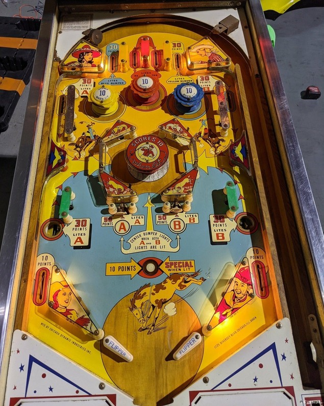

Not to be confused with Bronco (Gottlieb, 1977).
The four top lanes score 30, 20, 20, and 30 points. The two center top lanes both light the center red pop bumper in the upper set of 3. The left top lane lights the blue bumper on the right, and the right top lane lights the yellow bumper on the left. Bumpers score 1 point, or 10 when lit.
The letters A and B can each be collected in three places: an upper side lane, a side saucer, and a lower standup target. These features award A if they are on the left side of the table, and B on the right. Top lanes and side saucers score 30 points, while lower standup targets score 50.
Lighting both A and B in the same ball lights the pop bumper in the center chamber for 10 points instead of 1. The upper side lanes and the upward kick from the lower saucers send the ball through one-way gates and into the center pop bumper chamber. Once a ball is in the center chamber, it can only leave out of the top or the bottom. Try to light the chamber bumper as soon as possible and keep the ball there, but beware the possibilitiy of an instant center drain return if you enter the chamber from below by shooting directly at the chamber pop bumper.
The rollover button just above the flipper gap scores 10 points, or Special when lit. It is lit after every 10th 1-point switch hit anywhere in the game, and only on ball 1, ball 3, or ball 5 depending on operator settings.
There are no in lanes. Slingshots score 1 point and out lanes score 10. The flipper gap is quite wide and there is no center post. There is no end of ball bonus or extra ball feature. The tilt penalty is adjustable: it can either be only the ball in play, or it can end the entire game for only the player who tilted.
The below picture of Bronco's playfield was taken from Pinside, where it is listed as image #3947564.
